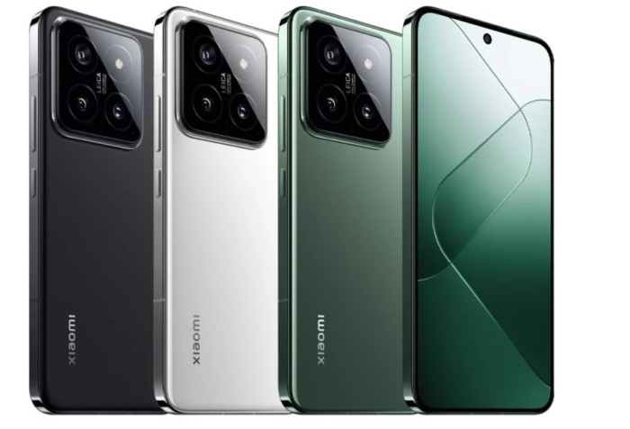

Disini tersedia handphone
xiaomi redmi 14

Prosesor
Snapdragon® 8 Gen 3 Mobile Platform
CPU
1x Prime core (berbasis X4), hingga 3.3GHz
3x Performance core (berbasis A720), hingga 3.2GHz
2x Performance core (berbasis A720), hingga 3.0GHz
2x Efficiency core (berbasis A520), hingga 2.3GHz
GPU
GPU Qualcomm® Adreno™
Penyimpanan & RAM
12GB + 256GB
RAM 8533Mbps LPDDR5X + Penyimpanan UFS 4.0
Dimensi
Tinggi: 152,8 mm
Lebar: 71,5 mm
Ketebalan: 8,20 mm
Bobot: 193 g
Layar
AMOLED 1.5K 6.36"
Kamera Belakang
Lensa optik profesional Leica
Kamera Depan
Kamera selfie dalam tampilan 32MP
Baterai
Baterai 4610mAh (standar)
Sistem Pendingin
Sistem Xiaomi IceLoop
Keamanan
Sensor sidik jari di layar
AI Face Unlock
NFC
Ya
Jaringan & Konektivitas
Dua SIM (SIM nano + SIM nano atau SIM nano + eSIM)
5G: n1/2/3/5/7/8/20/25/28/38/40/41/48/66/75/77/78
4G: LTE FDD: B1/2/3/4/5/7/8/12/13/17/18/19/20/25/26/28/32/66
4G: LTE TDD: B38/39/40/41/42/48
3G: UMTS: B1/2/4/5/6/8/19
2G: GSM: B2/3/5/8
Navigasi & Penentuan Posisi
GPS: L1+L5
Galileo: E1+E5a | GLONASS: G1 | Beidou | NavIC: L5
Penentuan posisi berbantuan A-GPS | Kompas elektrik | Jaringan nirkabel | Jaringan data | SAP
Audio
Speaker stereo
4 Mikrofon
Dolby Atmos®
Video
MP4丨MKV丨WEBM丨3GP
Mendukung tampilan HDR saat memutar konten video HDR10, HDR10+, Dolby Vision
Tahan Cipratan, Air, dan Debu
IP68
Sensor
Sensor jarak | Sensor cahaya sekitar | Akselerometer | Giroskop | Kompas elektronik | IR blaster | Barometer | Sensor kedip | Motor linear sumbu X
Sistem Operasi
Xiaomi HyperOS
Harga
Rp 11.999.000,
!check out disni!
kembali ke halaman utama